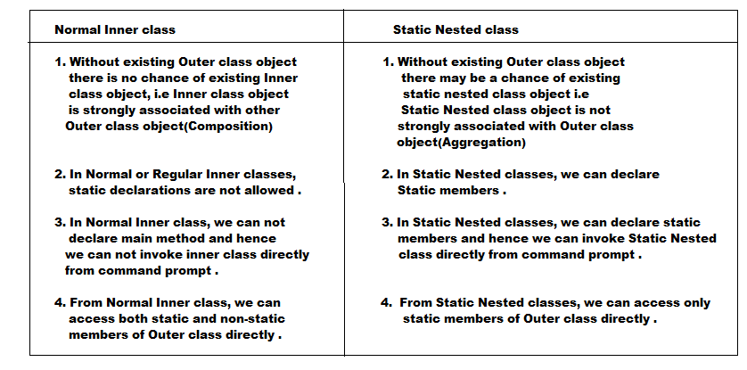

Static Nested Classes:
- Sometimes we can declare inner class with static modifier such type of inner classes are called Static Nested classes .
- In Normal or Regular Inner class, without existing Outer class object there is no chance of existing Inner class object .
- But in case of Static Nested classes, without existing Outer class object there may be chance of existing Static Nested class object . i.e, Nested class object is not strongly associated with outer class object .
- In normal or regular inner classes, we can not take static declarations, but in Static Nested classes we can take static declarations including main() method also .
- Hence we can invoke Static Nested class directly from command prompt .
- From Normal or Regular Inner class, we can access both static and non-static member of Outer class directly .
- But from Static Nested class, we can access only static members of outer class directly .
